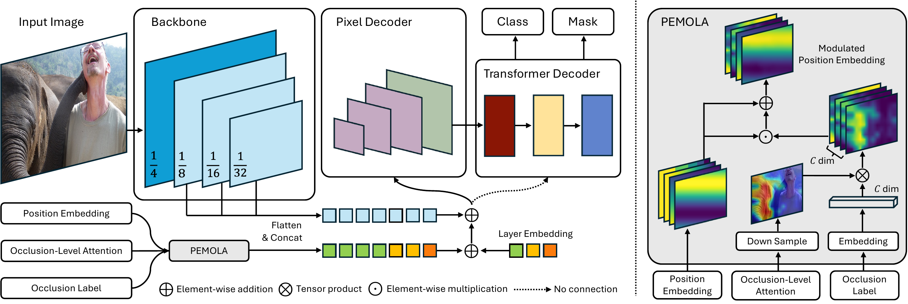
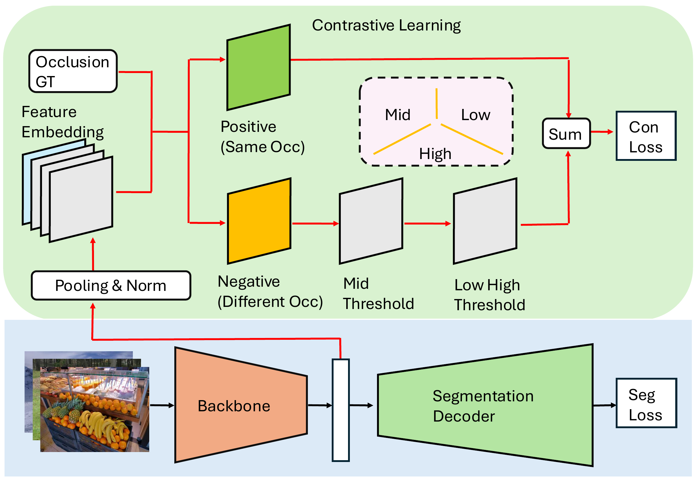

About Me
Hello! I am Wenbo Wei (魏文博). I received my PhD in Computer Science from the University of Warwick in June 2026. My research focuses on occlusion-aware panoptic segmentation, with the goal of enabling robust scene understanding in real-world occluded environments.
My work spans occlusion benchmark construction, curriculum learning, and lightweight modules for transformer-based segmentation. I developed PEMOLA and built the COCO-OLAC and Cityscapes-OLAC benchmarks, with publications at IEEE ICME 2026 and ICASSP 2025.
My research interests include computer vision, scene understanding, deep learning, and image segmentation.
Education
University of Warwick
PhD in Computer Science, School of Computer Science
Coventry, United Kingdom
Research: Occlusion-aware panoptic segmentation
01/2021 – 06/2026
University of Birmingham
MSc in Advanced Computer Science, School of Computer Science
Birmingham, United Kingdom
09/2019 – 09/2020

Chongqing University of Posts and Telecommunications
BSc in Internet of Things Engineering, School of Automation
Chongqing, China
09/2013 – 09/2017
Experience
Senior Teaching Assistant
Department of Computer Science, University of Warwick
· Image and Video Analysis (CS413): Optical flow, object tracking, image segmentation pipelines.
· Machine Learning (CS342): Supervised/unsupervised learning, XGBoost, Random Forest, PCA.
· Neural Computing (CS331): Neural networks from scratch, matrix calculus, loss functions, regularisation.
09/2021 – 12/2023
Research Intern – Intelligent Vehicle Lab
Chongqing University of Posts and Telecommunications
· Designed an end-to-end traffic sign recognition system covering data augmentation, model training, and benchmark evaluation.
06/2015 – 08/2016
Projects
Lightweight Occlusion-Aware Position Encoding for Robust Panoptic Segmentation
11/2024 – 06/2025
Developed PEMOLA, a plug-and-play module for Mask2Former and Mask DINO that combines occlusion-level attention with learnable occlusion-label embeddings to modulate position embeddings. Improved panoptic segmentation across different occlusion severities with minimal computational overhead.
Paper · Code · Model weights
Curriculum Learning for Panoptic Segmentation under Occlusion
05/2024 – 09/2024
Developed a curriculum that orders training images from low to high occlusion within each epoch. Under a uniform distribution of occlusion levels, this strategy accelerated convergence and improved segmentation accuracy and generalisation in occluded scenes.
Large-Scale Occlusion Benchmark Construction and Model Optimization
06/2023 – 07/2024
Built two large-scale occlusion-annotated datasets (COCO-OLAC & Cityscapes-OLAC) with a unified manual annotation pipeline covering three occlusion levels. Systematically quantified the impact of occlusion on SOTA panoptic segmentation models and proposed a contrastive learning-based method to enhance robustness.
Paper · Code · COCO-OLAC annotations · Cityscapes-OLAC annotations
Publications
-
Occlusion-Aware Panoptic Segmentation with Joint Position Embedding and Occlusion-Level AttentionICME, IEEE, 2026

-
COCO-OLAC: A Benchmark for Occluded Panoptic Segmentation and Image UnderstandingICASSP, IEEE, 2025, pp. 1–5

-
Occlusion-Aware Panoptic SegmentationPhD Thesis, University of Warwick, 2026
Skills & Languages
Programming: Python, C
Frameworks: PyTorch, Detectron2
Research: Academic writing, critical thinking, peer review
Languages: Mandarin (native), English (professional working proficiency)